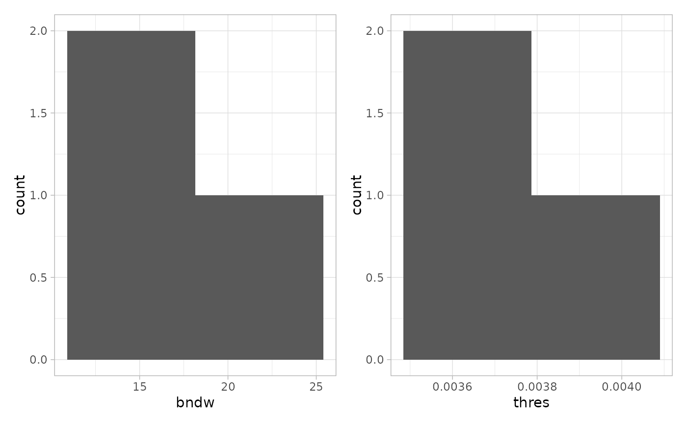

Estimate reconstruction parameters from a set of images
Source:R/reconstructShapePPP.R
estimateReconstructionParametersSPE.RdEstimate reconstruction parameters from a set of images
Usage
estimateReconstructionParametersSPE(
spe,
marks,
image_col,
mark_select = NULL,
nimages = NULL,
fun = "bw.diggle",
dim = 500,
ncores = 1,
plot_hist = TRUE
)Arguments
- spe
SpatialExperiment; a object of class
SpatialExperiment- marks
character; name of column in
colDatathat will correspond to thepppmarks- image_col
character; name of a column in
colDatathat corresponds to the image- mark_select
character; name of mark that is to be selected for the reconstruction
- nimages
integer; number of images for the estimation. Will be randomly sampled
- fun
character; function to estimate the kernel density. Default bw.diggle.
- dim
numeric; x dimension of the final reconstruction. A lower resolution speed up computation but lead to less exact reconstruction. Default = 500
- ncores
numeric; number of cores for parallel processing using
mclapply. Default = 1- plot_hist
logical; if histogram of estimated densities and thresholds should be plotted. Default = TRUE
Examples
spe <- imcdatasets::Damond_2019_Pancreas("spe", full_dataset = FALSE)
#> see ?imcdatasets and browseVignettes('imcdatasets') for documentation
#> loading from cache
spe <- spe[, spe[["image_name"]] %in% c("E02", "E03", "E04")]
estimateReconstructionParametersSPE(spe,
marks = "cell_category",
image_col = "image_name", mark_select = "islet", plot_hist = TRUE
)

#> # A tibble: 3 × 3
#> img bndw thres
#> <chr> <dbl> <dbl>
#> 1 E02 18.6 0.00393
#> 2 E04 11.4 0.00363
#> 3 E03 17.9 0.00370